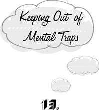

{% include JB/setup %}
{% raw %}
<div>

<h1 id="filepos230306" class="calibre19"><span class="calibre20"><span class="bold"><a class="calibre21"></a></span></span></h1><div class="calibre16"> </div>
<p class="calibre22">                 <a class="calibre23"></a><a class="calibre23"></a>ow that we’ve developed some skill in detecting traps, how do we manage to get out of them? Let’s look in on a moment when we <em class="calibre9">are</em> out of them. All but the most blighted lives are blessed now and then with brief intervals of freedom from mental traps. We may be walking to the mailbox as we have countless times before when we suddenly realize that we are <em class="calibre9">just</em> walking to the mailbox. For a moment, there’s nothing else in the world but the spring of our step and the sun on our face. The present moment fills our consciousness entirely, banishing yesterday and tomorrow, hope and regret, plans, schemes, should-have-beens, what-ifs, and let-me-justs. We experience a delightful sense of lightness. The customary forced march through a field of molasses comes to a halt, and we glide. We haven’t a care in the world. There’s nothing to keep track of, nothing to remember, nowhere to get to, nothing to get over with. This moment exists all by itself. Why don’t we simply continue to live like this for the rest of time?</p>
<p class="calibre22"><a class="calibre23"></a>The answer is obvious. We don’t believe that life can be so simple. While we glide, who’s minding the store? It seems to us that our countless outstanding problems and projects must suffer from this sort of neglect. The good things we wish to secure must immediately begin to recede from us unless we keep them in their place by perpetually renewing our commitment to them. And the dire circumstances we want to avert must come closer unless we keep them at bay by our eternal vigilance. Living entirely in the present seems to us like holding our breath—perhaps we can do it for a minute or two on a dare, but it can’t be a way of life. After a few untrapped steps, we become frightened and plunge back into the sea of familiar troubles. There’s work to be done.</p>
<p class="calibre25">Is life simple or complex? Do we need elaborate calculations and prescriptions to get through, or will things work out as well in the end if we let impulse rule and just run free? As with all issues of ultimate importance, there’s something to be said for both sides. On the one hand, it isn’t true that we must <em class="calibre9">always</em> be vigilant, <em class="calibre9">always</em> calculating. Our situation doesn’t <em class="calibre9">automatically</em> deteriorate as soon as we turn our head. At least sometimes, we may <a class="calibre23"></a>allow ourselves the luxury of perfect spontaneity. We won’t automatically wander off the edge of a cliff as soon as we cease to push our lives from behind along a predetermined track.</p>
<p class="calibre22">On the other hand, there are cliffs; and when we skirt close to one, we must begin to calculate our steps. There are times when we can afford to be spontaneous, free, and impulsive; and there are times we have to be vigilant, calculating, and prescriptive. The question is how to key into one mode of operation and out of the other. This <em class="calibre9">switching problem</em> is the most fundamental problem of human life.</p>
<p class="calibre22">From one perspective—let’s call it the perspective of <em class="calibre9">modern consciousness</em>—this problem poses a formidable dilemma. At time X, while we’re functioning in the prescriptive mode, we may judge that current conditions make it safe for us to switch to the impulsive mode. But of course, even though it’s safe to be impulsive now, at X, there will come a time Y when we will need to revert to prescription. And if we permit the impulsive mode to take over, how will we recognize when moment Y arrives? Wandering aimless and free through the desert, we will not notice when we cross the point which takes us too far <a class="calibre23"></a>from home base, and we will die. The answer, says modern consciousness, is always to keep our distance from home base in mind, never to run totally free. Modern consciousness solves the problem of how to key in and out of prescription by <em class="calibre9">leaving the prescriptive mode running all the time—even when it isn’t needed.</em> Prescription may not be needed now; but if the reins are handed over to impulse, the prescriptive mode may not be keyed back in when it <em class="calibre9">is</em> needed.</p>
<p class="calibre22">It’s inevitable that such a strategy should lead to mental traps. To be trapped, by definition, is to perform mental work that isn’t needed. And the strategy of modern consciousness is to be working all the time. We feel we must always stay “on top” of the situation, just in case. The various traps are no more than different ways of trying to stay on top.</p>
<p class="calibre22">There are other solutions to the problem of keying in and out of the prescriptive mode. For one, we may hand over the keying function to an external agency that, we trust, will be vigilant for us and turn our prescriptive apparatus on and off as necessary. Those who accept the absolute authority of another person (mother, guru), an organization (the church, the government), or a <a class="calibre23"></a>system of ideas (psychoanalysis, Marxism) have much less of a problem with mental traps. When the authority tells them to do mental work, they work. And when the authority declares a holiday, they can really and truly rest, secure in the knowledge that someone else is minding the store.</p>
<p class="calibre22">This is the great consolation of belonging to a religion, whether spiritual or secular: it permits us to lay down our burden. Biblical fundamentalists and doctrinaire Marxists are better able than we are to sustain and enjoy the giddy sense of life’s simplicity and freedom from agendas. They can accept whatever the future will bring. They have no need to shape it according to their will, because they’re certain that Marx or the Bible will prove to be an adequate guide in any eventuality. True believers don’t need to study mental traps.</p>
<p class="calibre22">This is how most people lived in simpler ages. They learned the values and traditions of their society in one piece, and these values governed their actions forever after. It never occurred to them to <em class="calibre9">choose</em> a way of life, since there were no examples of alternatives around them. And because they had no choice, they felt entirely free. This archaic mode of being, still enjoyed by the contemporary true believer, is qualitatively <a class="calibre23"></a>different from the life of modern consciousness. Let’s call it <em class="calibre9">traditional consciousness.</em></p>
<p class="calibre22">Traditional consciousness disappears when external authority ceases to be monolithic. As soon as there are two bibles, we can no longer be perfect fundamentalists. For whether we wish it or not, we must choose, on the basis of our own lights, which bible we’re going to follow. And contemporary society presents us with innumerable candidates for biblehood. This makes it exceedingly difficult to become a true believer nowadays. Even if we definitely opt for one bible or another and follow its dictates to perfection, the fact that we’ve chosen distinguishes us still from a bona fide true believer. For we must have chosen on the basis of some <em class="calibre9">criterion</em>—rationality, intuition, it doesn’t matter which—and so, whether we desire it or not, it’s this inner criterion that remains the foundation of our action. We can persuade ourselves to accept a bible as a perfectly correct and perfectly complete guide to living, but we can’t make it authoritative. Whether it pleases us or not, what’s accepted can also be rejected. In contrast, there’s never a moment when traditional consciousness accepts or chooses its traditions—the traditions are the <a class="calibre23"></a><em class="calibre9">starting point</em> of thought, beyond the realm of choice. The transformation of consciousness from the traditional to the modern variety is therefore irreversible. Whether we like it or not, we can’t go home again.</p>
<p class="calibre22">Whether the trap-free life of traditional consciousness is happy or productive depends entirely upon the luck of the draw. If the external authority is benevolent and wise, its decisions will be good. But the authority may also be Hitler or the Reverend Jim Jones. The problem with traditional consciousness is that it leaves us no protection against Jim Joneses or—a far more frequent danger—those who would make our lives narrow and dull. For traditional consciousness is given up to authority without reservation. If we retain the option to reconsider our commitment in case things don’t work out well, then we’re only playing games with ourselves—the putative authority isn’t an authority at all, however punctiliously we follow its dictates. In this case, ultimate authority remains in whatever self-generated criterion the external quasi-authority is to be judged by. Modern consciousness is only pretending to be traditional here. Except in rare circumstances, traditional consciousness is <a class="calibre23"></a>unalterable, for the advisability of any possible change is judged on the basis of the traditions themselves. If we could persuade biblical fundamentalists to entertain the question of the validity of the Bible, they would only seek the answer by looking it up in the Bible. We never get more than one chance to live traditionally. If the draw is unlucky—if the authority is self-serving, foolish, or mad—there is no turning back. We must follow it over the edge of the cliff.</p>
<p class="calibre22">In any case, for the modern mentality to which this book is addressed, traditional consciousness is no longer a live option. Absolute authority is finished for us. There’s no one to push our buttons, keying planning, calculation, and prescription in and out as the occasion requires. And so we return to our dilemma: if we shut the prescriptive mode down even for a moment, allowing ourselves to run free, how will we get it switched on again when it’s needed?</p>
<p class="calibre22">The intractability of this dilemma depends on an unconscious assumption. We’ve come upon unconscious assumptions before in our analysis of mental traps. But this one is the Primal Assumption upon which the entire structure of trapped modern consciousness is based. We <a class="calibre23"></a>suppose that impulse—the non-rational and non-prescriptive wellspring of action—is incapable of returning the reins to prescription on its own initiative; and that even if it could, it wouldn’t know when it was appropriate to do so. That is, we assume that <em class="calibre9">only rational calculation can tell us when rational calculation is needed.</em> If this Primal Assumption is true, then we must indeed always keep the prescriptive apparatus running, always strive to stay on top of the situation, always be minding the store.</p>
<p class="calibre22">What would life be like if the Primal Assumption were false? It would mean that the urge to plan, calculate, and prescribe <em class="calibre9">arises impulsively</em>, like hunger and thirst, when the situation calls for it. It would also mean that we can stop planning, calculating, and prescribing when the need for these activities is over, for we would know that we’ll spontaneously begin them again when it’s useful to do so. Prescription would take its place <em class="calibre9">alongside</em> the other activities of life rather than being their <em class="calibre9">foundation.</em> We eat, we make love, we walk, we sleep—and sometimes we plan, calculate, and prescribe. In sum, we would cease to have mental traps. Modern consciousness would then have given way to <em class="calibre9">liberated consciousness.</em></p>
<p class="calibre22"><a class="calibre23"></a>Is impulse capable of shouldering such a load of responsibility? Let’s divide this question into two parts. First, once impulse rules, is it capable of returning the reins of action to prescription on its own initiative? Second, can it do so appropriately—is it capable of discerning when prescription is needed?</p>
<p class="calibre22">The first question is the easy one. Essentially we’re asking whether we can impulsively begin to calculate and prescribe, or whether calculation and prescription must always come from prior calculation and prescription. The fact that almost all of us have at least some moments of impulsivity gives us our answer. If we are impulsive one moment and prescriptive the next, it can only be that prescription has arisen out of impulsivity. Our <em class="calibre9">starting</em> to make reasoned decisions can’t be the result of a reasoned decision!</p>
<p class="calibre22">Can the spontaneous welling up of rationality be counted on to occur exactly when it’s needed? Not infallibly. We can all remember circumstances in which we acted impulsively and things went worse for us than if we’d done a little figuring. We thoughtlessly encourage the attentions of a bore, and he importunes us for years afterward. Had we kept our prescriptive apparatus running, we <a class="calibre23"></a>might have foreseen this outcome and prescribed a more reserved demeanor for ourselves. But of course we make mistakes in the prescriptive mode as well. Our calculations are sometimes based on erroneous or incomplete information, and we sometimes misplace a decimal point or skip a step. We can’t directly assess the relative efficacy of impulse and prescription by comparing the sum total of their outcomes—life is too complex. Nevertheless, it can be shown that there’s no advantage to leaving the prescriptive mode running all the time.</p>
<p class="calibre22">The crucial point is that planning, calculating, and prescribing can function only on the basis of certain premises. When we decide (prescriptively) whether to be reserved or warm toward someone we’ve just met, we consider the likely outcome of both courses of action and choose the one that, everything considered, seems best. But what makes one outcome better than another? Why do we deem not having a relationship with someone better than having a boring relationship with him—or vice versa? Perhaps such a decision can be made to follow from some general principle such as “Do what gives you the most pleasure” or “Do whatever serves others <a class="calibre23"></a>best.” But where do <em class="calibre9">these</em> general principles come from, in their turns? Perhaps from even more basic principles. But eventually the chain of rational justification has to stop at a principle or value that, from the viewpoint of rationality, is simply <em class="calibre9">given.</em> The deliberations of the prescriptive mode can’t begin with a blank slate. The items it begins with—our most fundamental principles and values—must therefore come from impulse. We spontaneously, irrationally adopt them. There is no other way to start thinking.</p>
<p class="calibre22">It follows that the strategy of modern consciousness makes no sense. We leave prescription running all the time because of our lack of faith in impulse. Yet impulse lies at the very heart of our prescriptive activities. Every plan we make, every calculation, every reasoned decision begins with assumptions that were given to us by impulse. Thus our faith in rationality <em class="calibre9">presupposes</em> an even more fundamental faith in impulse. If the dictates of impulse are untrustworthy, then so are the products of rational deliberation. And if we trust rationality, then we are committed to trusting the impulse that gives birth to it. In either case, there’s no advantage to be gained by the strategy of modern consciousness. Its only fruit is weariness.</p>
<p class="calibre22"><a class="calibre23"></a>This doesn’t mean that it’s always undesirable to deliberate or prescribe. The conclusion is rather that deliberation and prescription can be trusted to emerge on impulse when they’re needed, just like breathing and blinking one’s eyes. Therefore we can turn off the prescriptive apparatus without fear. We won’t immediately dive over the edge of the nearest cliff. Of course, absolute security can’t be guaranteed. It’s always possible to break one’s neck. But the habit of perpetually staying “on top” of every situation makes us work very hard for no return. In brief, it gets us into mental traps.</p>
<p class="calibre25">We are left with the question of what to do. We’ve already seen how every attempt to argue, command, insult, or otherwise persuade ourselves to desist from the useless mental work of one trap lands us immediately in another. The task of shutting down the prescriptive apparatus can’t be accomplished by its continuing activity! The same dilemma confronts the insomniac striving mightily to fall asleep. The harder she works at it, the farther the goal recedes from her. For both sleep and liberated consciousness can be won only by the cessation of our prescriptive activity. <a class="calibre23"></a>Indeed, falling asleep is always a little liberation—a victory of impulse over prescriptive control. A close analysis of how this familiar transition may be effected will tell us what we still need to know.</p>
<p class="calibre22">Sleep is unproblematic when we’re certain that there is nothing at all we need to do about it. We simply go to bed, serene in the knowledge that sleep will come when our body requires it. If we try to cause it to come by our own efforts, we only keep it at bay by the noise of our mental activity. But if we have faith in our own organism, the goal is won without doing a thing. Our faith is a self-fulfilling prophecy. Similarly, in the liberated state of consciousness, the rational, prescriptive apparatus places its faith in the impulsive apparatus. Rationality performs whatever calculations it has been called upon to perform and then gracefully retires, serene in the knowledge that when its services are once again required, it will hear the summons.</p>
<p class="calibre22">This faith, of course, is more than an intellectual conviction. Indeed, we’re assuming here that we’ve already been convinced of the desirability of liberation. We want to let go of the reins; we try to <em class="calibre9">prescribe</em> a policy of letting go; but we find <a class="calibre23"></a>that this maneuver is just a subtle way of hanging on. This condition also has its parallel in the realm of sleep. We’re like an insomniac who has come to understand that she keeps herself awake by her own struggles. She knows that sleep will come as soon as she ceases to care about its coming. So she struggles to cease caring. What else is there to do?</p>
<p class="calibre22">In the case of insomnia, sleep does eventually come even to the most faithless. But it comes in a surprising way. The insomniac struggles, entirely in vain, to grasp sleep until she gives up from sheer exhaustion and despair. And then, precisely because she’s given up, she falls asleep. The same process may also lead us from modern to liberated consciousness. We may prosecute the voluntary struggle to free ourselves to the bitter end. This paradoxical grasping at the state of letting go is bound to fail. Yet it may not prove entirely useless in the end. If we struggle with all our might, exhausting every possible stratagem of the rational, prescriptive apparatus, we may eventually reach so profound a level of despair that we simply give up the enterprise of pulling ourselves along by our own bootstraps. And then we’re given the prize after all. For when we cease to prescribe, the administrative void is filled by <a class="calibre23"></a>impulse. The transition may take a while. At first we may lie around in a state of abject passivity, no longer knowing what to do. But when our bladder gets full, the task at hand will be clear enough.</p>
<p class="calibre22">“If a fool would proceed with his own folly, he will become wise.” The shortcoming of this— the fool’s—route to liberation is that we are extraordinarily hopeful and tenacious creatures. Great calamities—the irremediable failures of all our plans and dreams—may, if they don’t destroy us utterly, result in liberation. But a lifetime of ordinary dissatisfaction is usually not long enough to make us give up.</p>
<p class="calibre22">We’re ready to give the life of impulse a try. But because we aren’t yet liberated, we can’t let go of the reins, even on a trial basis. We want to escape from the prison of modern consciousness. But since we’re <em class="calibre9">in</em> the prison, our actions <em class="calibre9">must</em> follow some regulative policy. We <em class="calibre9">must</em> stay on top of the situation. How then will we ever discover whether liberated consciousness really works?</p>
<p class="calibre22">The way out of this dilemma requires an exceedingly subtle maneuver on the part of rational consciousness. The trick is to adopt a regulative policy whose results are <em class="calibre9">identical</em> to the dictates of impulse. A concrete example will make <a class="calibre23"></a>this idea clear. The most elegant policy of the type we’re looking for is the practice of <em class="calibre9">attentiveness.</em> We simply commit ourselves totally to paying careful attention to whatever we’re doing. When we walk, we try to remain aware of every step; when we eat, we are attentive to the handling of knives and forks; and when we’re angry or upset, we remember to watch ourselves being angry or upset. In this way, the compulsive need of the prescriptive apparatus to follow a definite line is entirely satisfied. We are always pursuing a clearly prescribed goal: to be fully attentive. But this goal doesn’t determine the <em class="calibre9">content</em> of our activities. The policy of perfect attentiveness is compatible with our doing anything at all! With the prescriptive apparatus contentedly busy sustaining a policy of attention, impulse takes over by default. As in the case of liberation by despair, there may be an intermediate period of relative inactivity during which we don’t know what to pay attention to. After all, our prescriptive policy fails to specify a concrete course of action. But we can fully count on our bladder to take us past this point of impasse.</p>
<p class="calibre22">The practice of continuous attention to the present permits us to satisfy our biological needs. <a class="calibre23"></a>But can we live like this while leading a productive and creative life? If we intend only to watch ourselves, can we hold down a job, reform society, or raise a child? Our personal experiment will enable us to answer these questions for ourselves. By satisfying the presently felt imperative to follow a definite policy, the practice of attentiveness allows us to live impulsively on a trial basis. If everything goes well, we learn from direct experience that the store takes care of itself. When we’re hungry, we eat; and when we need to calculate and make plans, the prescriptive apparatus is called in to calculate and make plans. In this way we acquire the faith necessary for making the transition to liberated consciousness. Once the transition is made, we can drop the project of attentiveness as well. It’s only a crutch.</p>
<p class="calibre25">The faith required for liberation has nothing to do with arbitrary belief or wishful thinking. We’ve had a lot to say about the shortcomings of the rationalizing, calculating, and prescribing apparatus that rules modern consciousness. But modern consciousness can be transcended only when it cleaves unswervingly to its own truth. A glib pseudo-faith in the intrinsic goodness of inner <a class="calibre23"></a>impulses or outer saviors will not set us free. For modern consciousness, the only faith that counts for something is one that has withstood the test of relentless scrutiny with absolute intellectual honesty. Perhaps there is no salvation for us. Perhaps the fragile island of order and control so painstakingly won by our rationality is the only refuge. Perhaps life is ultimately absurd. It’s possible for a <em class="calibre9">traditional</em> mind to achieve liberation without having to deal with issues like these. But there can be no transcendence of modern consciousness except by traversing the sea of nihilism. We won’t be able to achieve inner peace until we’re ready to face the possibility that conflict is unending. Let’s not be comforted by hopes and lies. Let’s dedicate ourselves wholly to the truth, wherever it may lead. For the rational mind to which this book is addressed, there is no higher master.</p>  <div class="mbppagebreak" id="calibre_pb_30"></div></div>

{% endraw %}

